Koopman-inspired model
Visuo-dexterity through behavioral dynamics
A Koopman-inspired visuo-dexterity model rolls out structured visual-action dynamics for temporally coherent manipulation.
Robotics PhD Student, Georgia Tech
I study structured robot learning for manipulation in complex, unstructured environments, with a focus on dexterity learning from human video, robot behavior models, and tactile manipulation.
I am advised by Prof. Harish Ravichandar at Georgia Tech. I have also been fortunate to work with Prof. Sehoon Ha, Prof. Zsolt Kira, and Prof. Danfei Xu. I received my M.S. and B.S. in Mechanical Engineering from UC San Diego and Yanshan University.
My interest in robotics started with Code Geass, and I wanted to build a mecha in high school. Now, the robots I work on are smaller than the mecha I imagined, but the motivation has stayed with me.
I build robot-learning systems that turn human videos, sparse demonstrations, and real-world explorative interactions into deployable manipulation skills.
Robot learning from motion and interaction priors extracted from human videos.
Learning temporally coherent visuo-dexterity skills with behavioral dynamics.
Using touch to adapt visual policies when contact details matter most.
By integrating these directions, I aim to build open-world robot-learning agents that autonomously acquire robust dexterous skills from watching human users at deployment time and generalize across diverse operating environments, objects, tasks, and robot platforms.
A short log of current research milestones, talks, internships, and fellowship updates.
Real-world clips of Koopman-inspired visuo-dexterity, tactile policies, and autonomous human-video learning.
A Koopman-inspired visuo-dexterity model rolls out structured visual-action dynamics for temporally coherent manipulation.
A tactile residual policy refines a visual base policy through real-world RL, using additional tactile feedback for contact-rich tasks.
One autonomous pipeline converts human-object interaction cues into deployable robot policies across daily manipulation tasks.
A curated set of projects that best represent my current research direction in dexterous robot learning and tactile sensing.
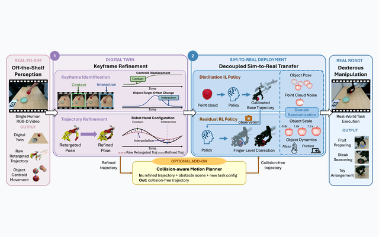
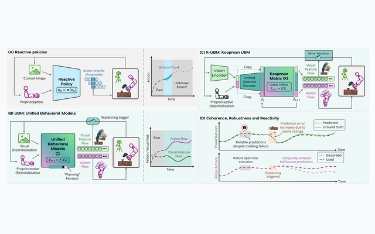
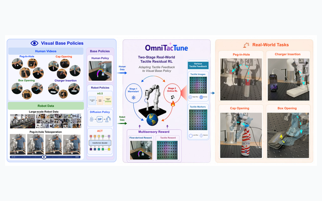
Adapts tactile feedback to pretrained visual policies through real-world residual RL for contact-rich manipulation.
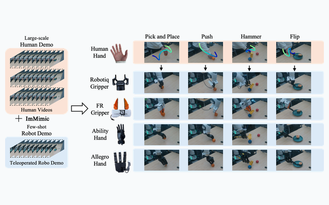
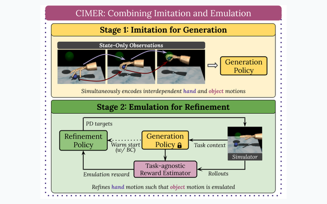
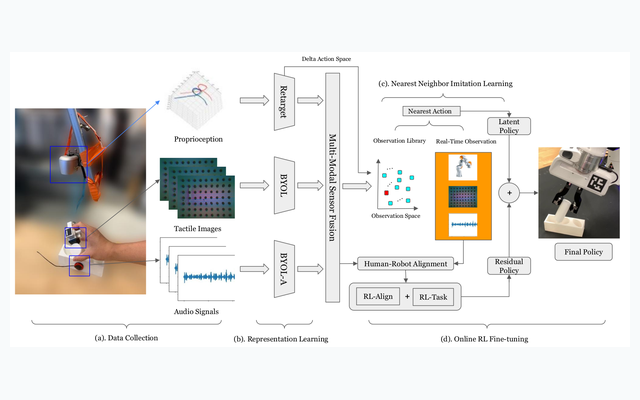
Transfers tactile-guided human manipulation strategies to robot grippers with imitation and online residual reinforcement learning.
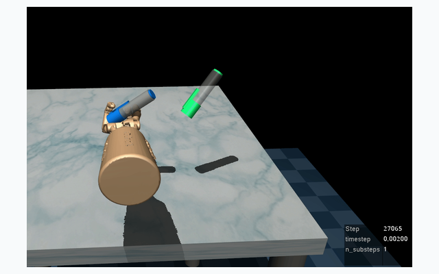
Shows that Koopman operator-based imitation learning can train dexterous manipulation skills efficiently, quickly, and with interpretable structure.
Search and filter the full publication list by title, topic, venue, author, or year.
Under review
Introduces a full-stack framework that reconstructs simulator-ready digital twins from a single human video, extracts priors for robot and object motion, refines behavior in simulation, and transfers dexterous skills to real robots.
Under review
Adapts tactile feedback to pretrained visual policies through a policy-agnostic residual RL pipeline, improving real-world contact-rich manipulation across tasks, policies, and tactile representations.
Under review
Frames dexterous skills as coupled dynamical systems over visual and proprioceptive flows, enabling temporally coherent visuo-motor behavior through a structured Koopman representation.
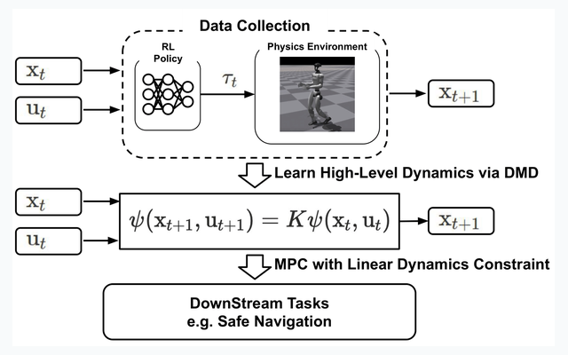
Accepted by CoRL 2025 (Oral); Spotlight at RSS Dex Workshop
Bridges human-to-robot imitation by combining retargeted human hand trajectories, robot demonstrations, and MixUp interpolation for embodiment-agnostic co-training.
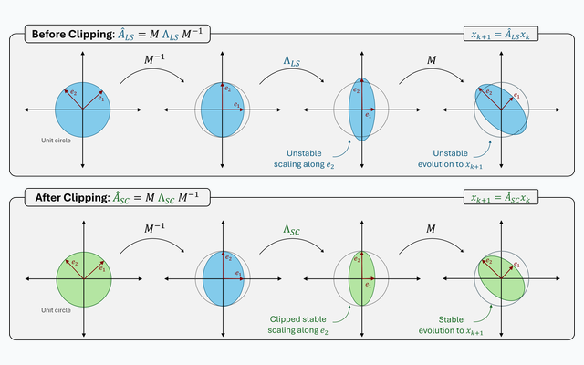
Under review
Studies a simple post-hoc spectral clipping procedure that can produce accurate, verifiably stable, and computationally efficient learned linear and Koopman dynamical systems.
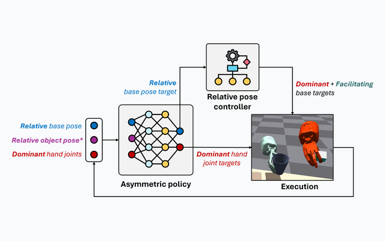
Spotlight at RSS Whole-body Control and Bimanual Manipulation Workshop 2025; Poster at CoRL Workshop 2024
Learns asymmetric bimanual dexterity by assigning complementary hand roles and operating over relative observation and action spaces for coordinated manipulation.
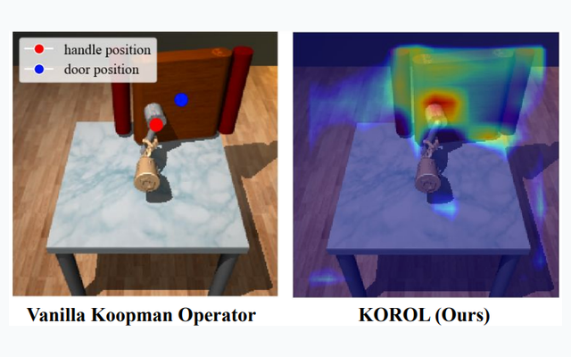
Accepted by CoRL 2024
Learns visually interpretable object features and advances them with a Koopman operator, improving manipulation from visual observations without runtime ground-truth object states.
Accepted by CoRL 2024; Best Paper at NeurIPS Touch Processing Workshop
Collects multimodal human tactile demonstrations and uses imitation plus online residual RL to transfer tactile-guided strategies to robot grippers.
Accepted by CoRL 2023 (Oral)
Shows that Koopman operator-based imitation learning can train dexterous manipulation skills efficiently, quickly, and with interpretable structure.
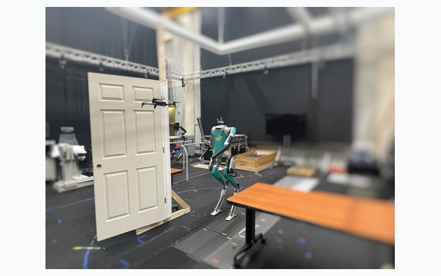
Accepted by SSRR 2022
Introduces a temporal-logic-based controller synthesis framework for heterogeneous agents that resolve runtime environmental conflicts while preserving safety and task completion.
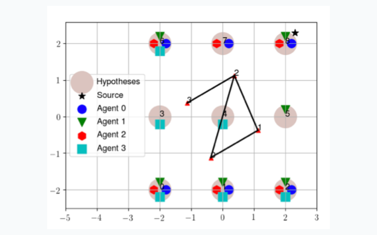
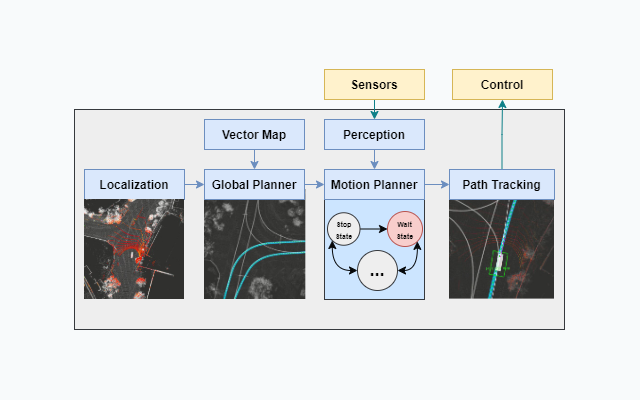
Accepted by Autonomous Intelligent Systems, Springer 2021
Summarizes the design, deployment lessons, and system improvements from autonomous micro-transit and mail-delivery vehicle work on the UC San Diego campus.
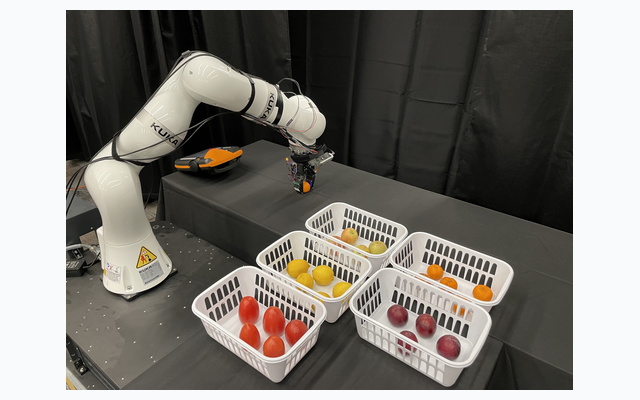
Students I have mentored and external collaborators I have worked with across robotics, control, and robot learning.
Hands-on robotics projects that shaped how I think about perception, control, and deployed systems.
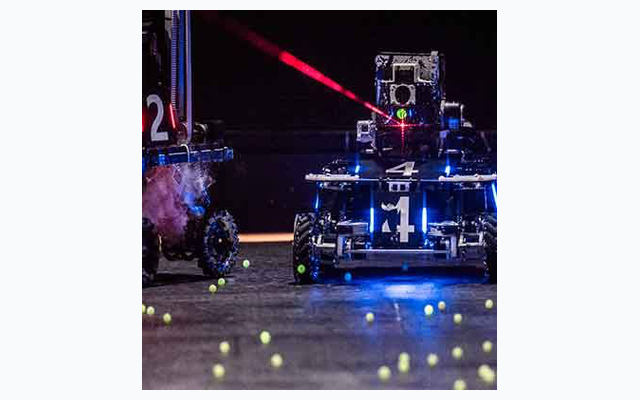
RoboMaster is a DJI-founded platform for robotic competitions and academic exchange. I was the vision group leader of YSU Eagle, where my group worked on object tracking, range estimation, serial-port communication, and gimbal stability control for mobile robots.
Academic service, teaching experience, and a few personal interests outside the lab.